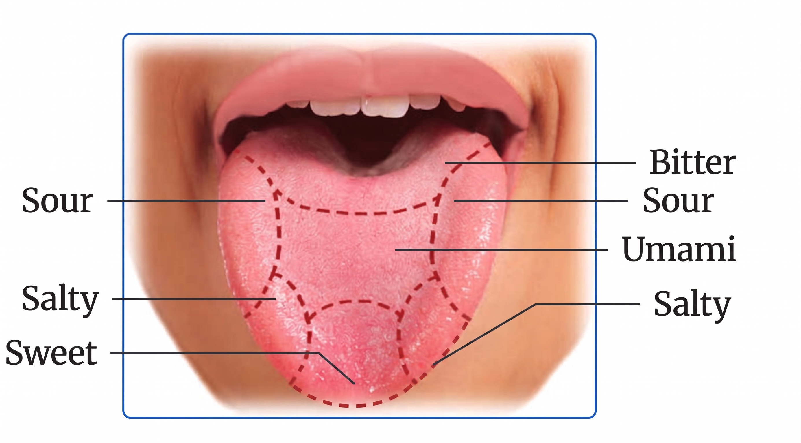

Tongue
The tongue is a sense organ that is used for recognising tastes of different substances. The tongue has taste buds which can recognise five different tastes, namely sweet, sour, salty, umami and bitter. Figure 6 shows the taste areas of the tongue. The information on taste is then sent to the brain for interpretation.

Figure 6: Taste areas of the tongue
Parts of the tongue and their functions
Each taste is detected mostly at a specific part of the tongue, as explained in Table 2.